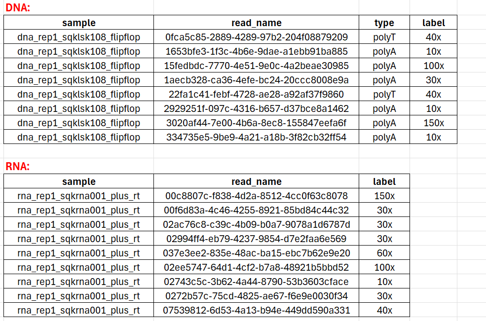

PolyA tail dection benchmark
Polyadenylation is the addition of a poly(A) tail to an RNA transcript, typically a messenger RNA (mRNA). PolyA detection can serve as a quality control measure after base calling. Since the polyA tail is used in the sequencing library preparation, any sequence without a detectable polyA tail is flagged as a low-quality read and eliminated from downstream analysis.
Download the benchmark datasets and resluts (ont_ployA_standard.tar.gz, eGFP_polyA_DNA.tar.gz, and eGFP_polyA_RNA.tar.gz).
PolyA detection rate benchmark |
|---|

PolyA tail length estimation benchmark |
|---|
The polyA tail length estimation distribution on dataset ont_ployA_standard.

PolyA detection benchmark models introduction |
|---|
Nanopolish polya
Nanopolish polya utilizes a Hidden Markov Model (HMM) to detect polyA tails and estimate their length. It divides each raw signal into five segments: start, leader, adapter, polyA tail, and transcript.
adapter (red), poly(A) tail (green), and transcript (purple). Two samples flagged as “cliffs” can be observed in the poly(A) tail. (figure source: [2])
Tailfindr
Tailfindr is an R tool that estimates poly(A) tail length from individual reads directly from ONT FAST5 raw data. tailfindr is able to estimate poly(A) tails from both RNA and DNA reads, including DNA reverse-complement reads containing poly(T) stretches. [3]
Dorado
Dorado is the latest basecaller developed by ONT, offering support for estimating polA tail length.
PolyA tail length ground truth label |
|---|
For dataset ont_ployA_standard, the sample name is the label.
While different datasets have different naming conventions. For dataset eGFP_polyA_DNA and eGFP_polyA_RNA, the sample names are organized by kit and replicate. And the label can be obtained using the barcode. The barcode in eGFP datasets is assigned by aligning the expected barcode sequences against the extracted read sequence preceding the eGFP alignment (see below Table).

Download all the label files tailfindr_label.tar.gz.
Reference
[1] Weil T T. Post-transcriptional regulation of early embryogenesis[J]. F1000prime reports, 2015, 7.
[2] Workman R E, Tang A D, Tang P S, et al. Nanopore native RNA sequencing of a human poly (A) transcriptome[J]. Nature methods, 2019, 16(12): 1297-1305.
[3] Krause M, Niazi A M, Labun K, et al. tailfindr: alignment-free poly (A) length measurement for Oxford Nanopore RNA and DNA sequencing[J]. RNA, 2019, 25(10): 1229-1241.
© 2024. All rights reserved.